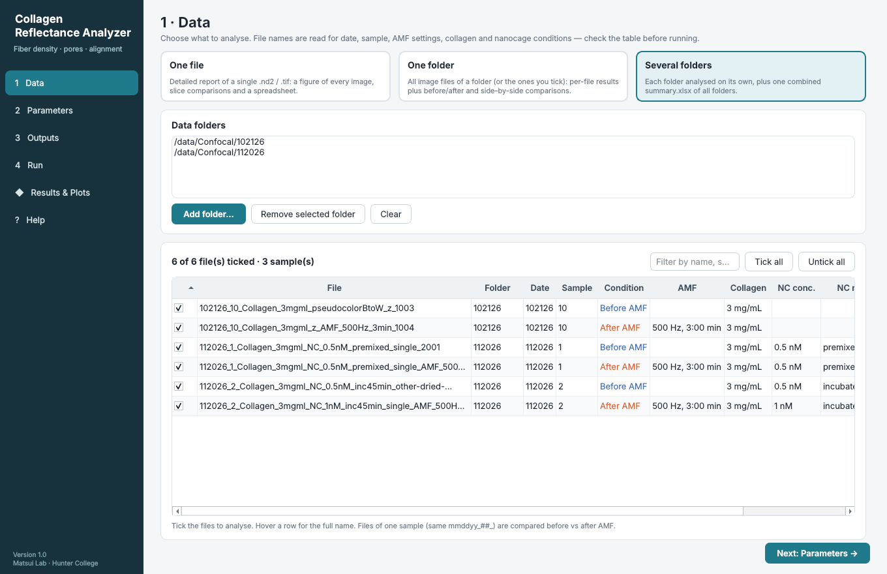
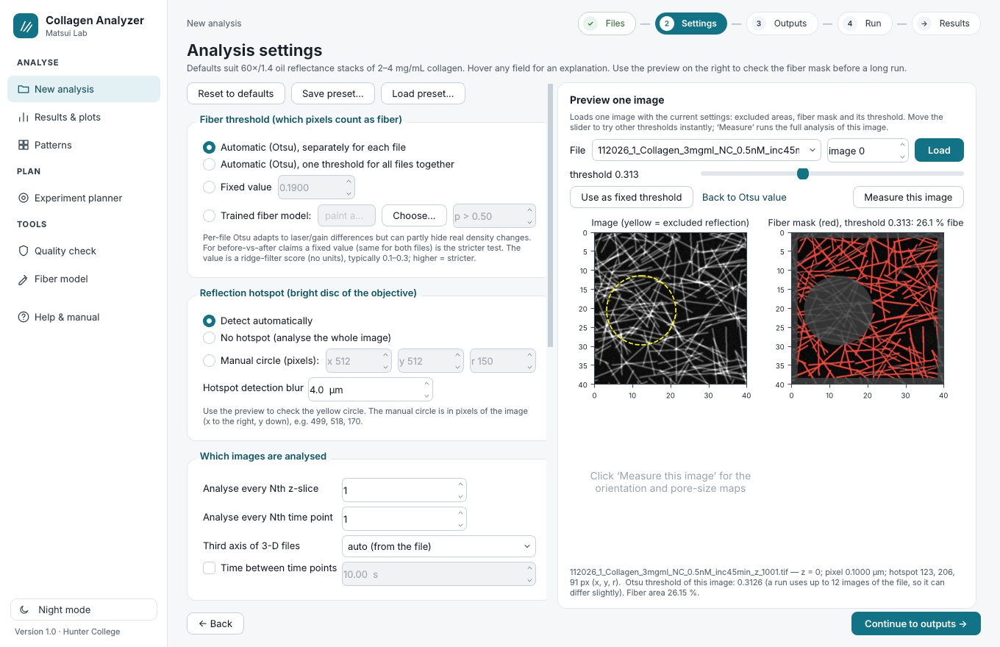
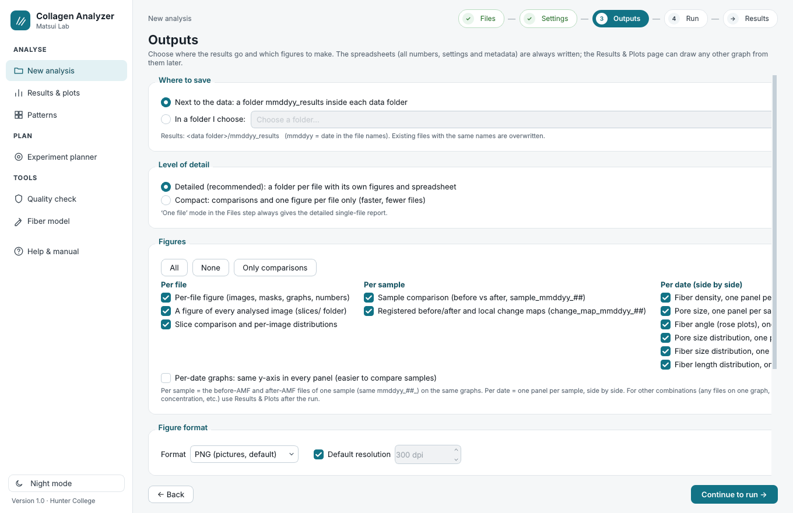
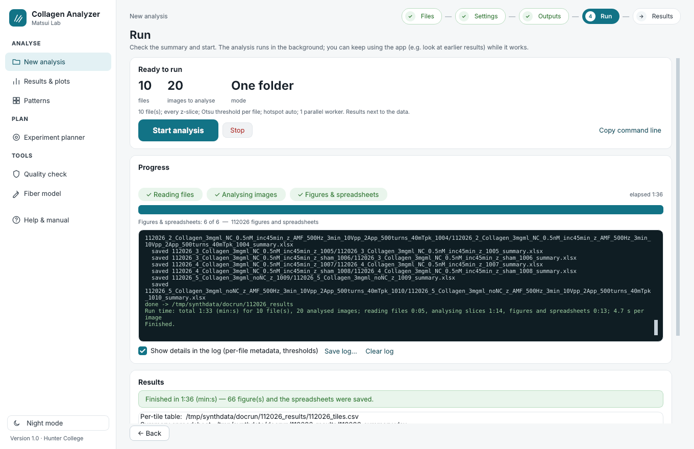
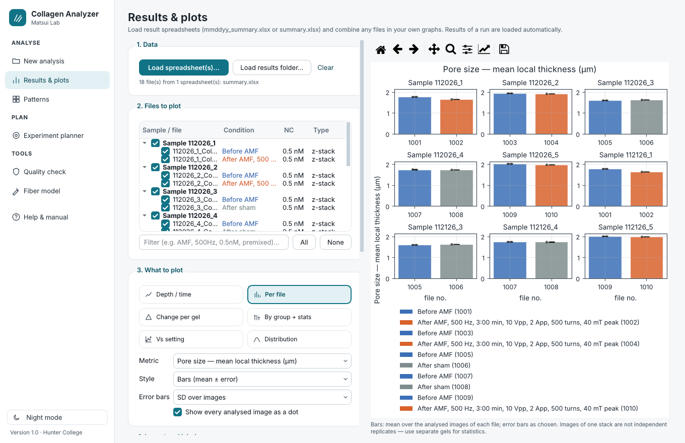
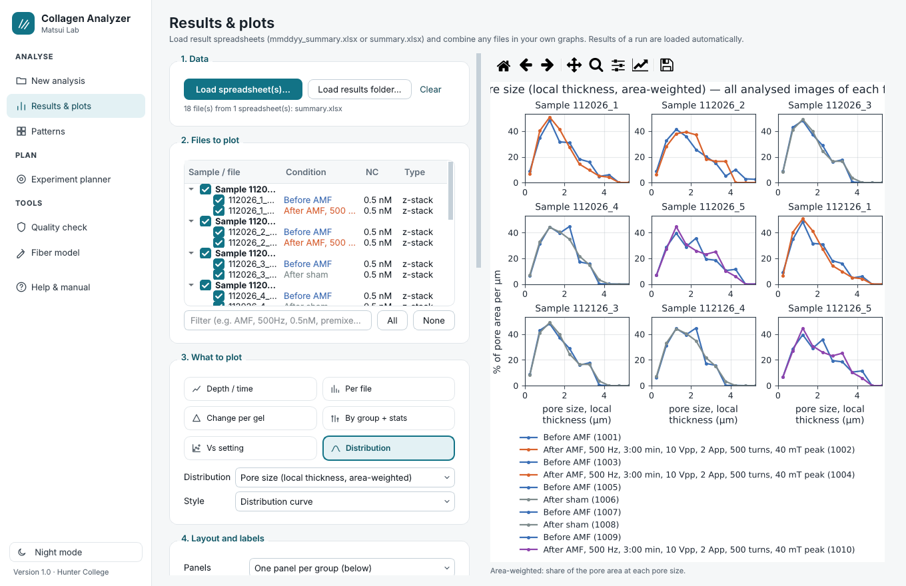

User manual · version 1.0 · Matsui Lab, Hunter College (CUNY)
The app measures the structure of collagen hydrogels in confocal reflectance images (.nd2 from the Nikon A1, or .tif): fiber density, pore size, fiber thickness and length, alignment and patchiness. It compares files before and after AMF treatment, across samples and across experiments, and makes publication-ready figures and spreadsheets.
Contents
1. Installing and starting the app
2. Quick start (5 steps)
3. Naming your files
4. Page 1 · Data
5. Page 2 · Parameters and preview
6. Page 3 · Outputs
7. Page 4 · Run
8. Results & Plots: your own graphs
9. What the results contain
10. What the numbers mean
11. Good practice for comparisons
12. Troubleshooting
13. Command line (optional)
There are two ways to run the app. Both give exactly the same app.
| Way | Needs | Best for |
|---|---|---|
| A. Standalone app ( Collagen Analyzer.app / CollagenAnalyzer.exe) |
Nothing — Python is built in | Everyday use; lab computers; sharing with lab members |
| B. Launcher ( Start_Mac.command / Start_Windows.bat) |
Python 3.9 or newer (free, python.org) | Running from the app folder; always the newest code |
Getting it. The standalone app is built for free on GitHub (Mac and Windows computers there build it). Once:
collagen-analyzer, private is fine) and upload the whole app folder,
including the hidden .github folder. (On GitHub: Add file → Upload files, drag the folder contents in.
On a Mac, press Cmd + Shift + . in Finder to see hidden folders.)CollagenAnalyzer-mac-apple-silicon (M1/M2/M3/M4 Macs),
CollagenAnalyzer-mac-intel (older Macs) or CollagenAnalyzer-windows.Mac: unzip and drag Collagen Analyzer.app to Applications. The app is not signed by Apple, so macOS blocks it the
first time. Open Terminal and run xattr -dr com.apple.quarantine "/Applications/Collagen Analyzer.app", then open it
normally (or: after the warning, System Settings → Privacy & Security → Open Anyway).
Windows: unzip the folder anywhere (e.g. Documents) and double-click CollagenAnalyzer.exe inside it (keep the
_internal folder next to it). If Windows SmartScreen appears: More info → Run anyway. Right-click the .exe →
Send to → Desktop (create shortcut) for a desktop icon.
xattr -dr com.apple.quarantine (with a space at the end), drag the
app folder into the Terminal window, press Return. Then double-click Start_Mac.command. (Alternative: after the warning,
open System Settings → Privacy & Security, scroll down and click Open Anyway.)
If you downloaded the code from GitHub (Code → Download ZIP) and double-clicking says you do not have permission,
type bash (with a space) in Terminal, drag Start_Mac.command into the window and press Return.
Windows: double-click Start_Windows.bat.~/Library/Application Support/CollagenAnalyzer;
Windows: %LOCALAPPDATA%\CollagenAnalyzer), so the app folder can stay in iCloud Drive / OneDrive. To force a clean
reinstall of the packages, delete that folder and start again.The app remembers all settings and the last folders between sessions.
The app reads the experimental conditions from the file names. Parts are separated by underscores and can be in any order after the first two; parts that are missing are simply left empty.
Example: 112026_3_Collagen_3mgml_NC_0.5nM_inc45min_other-dried-edges_z_AMF_500Hz_3min_10Vpp_8.5V_1013.nd2
| Part of the name | Meaning | Accepted forms |
|---|---|---|
mmddyy_##_ (start, required) | Date and sample number. Files with the same start are one sample and are compared before vs after. | 112026_3_ |
AMF | Marks the After AMF file; files without it are Before AMF (the word can be changed on the Parameters page) | _AMF_ |
###Hz | AMF frequency | 500Hz, 1kHz, 1.5kHz |
| time | AMF exposure time | 3min, 1.5min, 3min30s, 3m30s, 90s |
#Vpp | AMF Vp-p set on the instrument | 10Vpp, 10Vp-p, 10Vpk-pk, 2p5Vpp, 500mVpp |
#V | Measured AMF voltage | 8.5V, 8p5V, 850mV |
Collagen_#mgml | Collagen concentration | Collagen_3mgml, Collagen_2.5mgml, Collagen_2p5mgml |
NC_#nM | Theoretical local nanocage concentration | NC_0.5nM, NC0.5nM, NCs_500pM, NC_2uM |
premixed | NCs mixed into the collagen before gelation | premixed, premix, pre-mixed |
inc45min | NCs incubated on the polymerized gel for that time | inc45min, incubated_45min, incub_1h30min, inc1.5h |
other-… | Free note (use hyphens inside it); not read for anything else | other-dried-edges, other_rep2 |
| last part | File number shown in legends | ..._1013 → “(1013)” |
other- note
is ignored, so other-noAMFcontrol does not make a file “After AMF”.
Data page with two folders. Before/After AMF is colored blue/orange; red dates mean the name does not start with mmddyy_##_.
Choose a mode with the three cards:
| Mode | What it does | Results |
|---|---|---|
| One file | A detailed report of a single file | mmddyy_results/<file>/: a figure of every analysed image, slice comparisons, spreadsheet |
| One folder | All files of a folder (or the ticked ones) | mmddyy_results/ in the folder: per-file folders, sample and per-date comparisons, mmddyy_summary.xlsx |
| Several folders | Each folder analysed on its own | As above in each folder, plus one summary.xlsx combining all folders |
AMF, 0.5 nM, premixed).Everything read from the file names (condition, AMF frequency/time/Vp-p/voltage, collagen, NC concentration, NC mixing, incubation time, note) can be corrected or filled in directly in the table:
Hand-typed values, defaults and added parameters are remembered for future runs. They are used in all titles and
spreadsheets; added parameters become their own columns (e.g. gel_thickness_um, nc_type). The sheet
settings records which values were typed by hand for each file (set_by_hand) and which parameters were added
(user_fields), and the run log lists them. In Results & Plots, numeric added parameters can be used as the x-axis,
and all added parameters for colors and grouping.

Left: settings (hover any field for help). Right: preview of one image with the fiber mask, orientation and pore-size maps.
| Option | When to use |
|---|---|
| Automatic (Otsu), separately for each file — default | Microscope settings (laser, gain) differ between files. Adapts to each file, but can partly hide real density differences. |
| Automatic (Otsu), one threshold for all files | Same imaging settings for all files; one data-driven value for everything. |
| Fixed value | The strictest before-vs-after comparison: the same value for every file. Choose it with the preview (typical 0.1–0.3; higher = stricter). |
The objective reflects the laser as a bright disc in the middle of reflectance images; it is excluded from the analysis. Detect automatically works for the usual centred disc. Use Manual circle (x, y, radius in pixels; x to the right, y down from the top-left corner) if the preview shows the yellow circle in the wrong place, or No hotspot for images without it.
| Parameter | Default | What it does / when to change |
|---|---|---|
| Analyse every Nth z-slice | 1 | 1 = every slice. 4 is ~4× faster and still samples finer than the axial resolution (~0.6 µm) for 0.075 µm steps. Use 17–34 for quick tests. |
| Analyse every Nth time point | 1 | Time-lapses only. |
| Third axis of 3-D files | auto | Only for TIFFs whose third axis is not labelled: z (depth) or t (time). |
| Time between time points | off | Only for files that do not store timing (some TIFFs). |
| Background flattening blur | 2.5 µm | Removes uneven illumination and depth attenuation. Keep clearly larger than fibers; increase (4–5) for thick bundles. |
| Ridge filter scales | 0.1, 0.15, 0.2 µm | Fiber half-widths the detector looks for. Add 0.3, 0.4 for thick bundles; drop 0.1 for noisy images. |
| Remove specks up to | 0.32 µm² | Noise removal. Raise (0.5–0.8) for grainy images. |
| Orientation window | 0.4 µm | Smoothing of the fiber-angle measurement. |
| Excluded image border | 1.6 µm | Border strip ignored (filter edge effects). |
| Tile size for patchiness | 13 µm | Tile size for the tile CV. |
| Shortest fiber segment counted | 0.5 µm | Shorter side branches are pruned before fibers are split into segments. Raise (0.8–1) if the length distribution is dominated by tiny pieces. |
| Spacing of pore centres | 0.5 µm | Only for the secondary pore measure (local maxima). |
| Hotspot detection blur | 4 µm | Blur used to find the reflection disc. |
| Parallel workers | cores − 1 (max 8) | Images analysed at the same time. Lower it if the computer runs out of memory. |
| After-AMF files contain | AMF | Text that marks After-AMF files in the names. |
| Pixel size / Z-step | off | TIFF files only, when the file does not contain them. .nd2 files always use their own calibration. |
Presets: Save preset… stores all parameters in a small .json file (e.g. “fixed threshold 0.19, thick fibers”); Load preset… restores them. Reset to defaults returns to the standard values. Every value used is also written to the results spreadsheet (sheet “settings”), so each run can be reproduced.

mmddyy_results inside each data folder) or in a folder you choose
(with several data folders: one sub-folder per data folder plus summary.xlsx). Files with the same names are overwritten —
choose another folder to keep runs with different settings apart.| Figure | Shows |
|---|---|
| Per-file figure | Two images, fiber mask, orientation map, density and pore size vs depth/time (or distributions for single images), angle rose, all numbers. |
| A figure of every analysed image | For each image: image, mask, orientation, segments, pore- and fiber-size maps, all distributions and numbers (folder slices/). |
| Slice comparison | Every metric vs depth/time, and the distributions of every image colored by depth/time. |
| Sample comparison | Before vs after AMF of one sample: images, density, pore size, all distributions, angles. |
| Per date (side by side) | One panel per sample: density, pore size, angle, pore-size, fiber-size and fiber-length distributions. |


Pore size per file, one panel per sample, every analysed image shown as a dot.
This page combines any files from any runs in one graph. Work from top to bottom on the left; the graph updates as you change things.
Load spreadsheet(s)… takes mmddyy_summary.xlsx or the combined summary.xlsx; Load results folder…
searches a folder and its sub-folders. Load as many as you like — results of different days are combined. After a run the new
results are loaded automatically. Clear empties the list.
Files are grouped by sample. Tick the files to show; ticking a sample ticks all its files. The filter box shows only matching
files (e.g. 500 Hz, 0.5 nM); All / None act on the files shown.
| Graph | Use it for | Options |
|---|---|---|
| Metric vs depth / time | How a metric changes through the gel or over time; one line per file | x-axis (depth, time, image number), line style, smoothing over N images |
| Metric per file | Comparing files: bars (mean ± SD/SEM), box plots, violin plots or points | Show every analysed image as a dot |
| Change after AMF, per sample | (after − before) / before in % for every sample that has both | — |
| Metric vs experimental parameter | Dose–response style: a metric against NC concentration, collagen, AMF frequency/time/voltage, incubation time | Points or points joined by lines (per color), log x-axis |
| Distribution | Pore size, fiber size, fiber length (curves or cumulative) and fiber angle (rose plots) | Distribution curve or cumulative |

Pore-size distributions, one panel per sample (same x-range in every panel).
Save figure… writes PNG, PDF, SVG or TIFF at the chosen resolution; untick automatic size to set the width × height in inches (e.g. 3.5 × 2.6 in for a single journal column). Export plotted data (CSV)… saves exactly the numbers in the graph, for Prism, Origin or Excel. The toolbar above the graph zooms, pans and resets the view.
| File | Contents |
|---|---|
mmddyy_summary.xlsx | Sheet per slice: one row per analysed image of every file — all metrics, the conditions from the
file name, all settings (set_…, file_…), file metadata (meta_…: laser, detector, objective, pinhole…) and per-image
metadata (slice_…). Sheet per file: mean and SD per file. Sheet settings: every parameter with a description. |
summary.xlsx | (several folders) all rows of all folders with folder / results_folder columns, plus a folders overview sheet. |
mmddyy_distributions.npz | Histograms behind the distribution graphs; used by Results & Plots. |
sample_mmddyy_##.png | Before vs after comparison of one sample. |
mmddyy_fiber_density.png etc. | Per-date figures, one panel per sample. |
<file name>/ | Per-file folder (detailed mode): per-file figure, slice comparison, slices/, the file's own spreadsheet. |
| Column | Meaning |
|---|---|
area_frac_pct | Fiber density: % of the analysed area covered by the fiber mask. |
area_frac_pct_thr_minus10pct / plus10pct | QC: the same with the threshold 10 % lower / higher. A large spread means density and pore size of that image depend strongly on the threshold. |
length_density_um_per_um2 | Total fiber centerline length per area (µm/µm²), after pruning short spurs. |
pore_lt_mean_um / median | Pore size as local thickness: for each pore pixel, the diameter of the largest circle that fits in the pore and covers it; area-weighted, corrected for pores cut by the image edge and the hotspot. |
pore_lt_edge_excluded_pct | Share of pore area whose size could not be measured (pore reaches an excluded area). |
pore_localmax_mean_um | Secondary pore measure: diameters at local maxima of the distance map. |
fiber_lt_mean_um / median | Apparent fiber thickness (local thickness of the mask). Set by optical resolution and threshold — for relative comparison, not the true fibril diameter. |
fiber_len_mean_um / median, fiber_len_n | Length of fiber segments between free ends and branch points (segments touching excluded areas are left out and the rest re-weighted). |
fiber_segments_per_100um2 | Number of segments per 100 µm² — higher = more fragmented / more branched network. |
order_S | Alignment: 0 = random directions, 1 = all fibers parallel. file_order_S_pooled pools all images of a file. |
mean_angle_deg | Mean fiber direction, −90…90°, counter-clockwise from the image x-axis (as OrientationJ). |
coherency | Local alignment within the orientation window (0–1). |
tile_cv | Patchiness: coefficient of variation (SD / mean) of the fiber fraction between tiles. |
mean_reflectance | Mean raw intensity (quality control: focus, depth attenuation, laser drift). |
threshold | Fiber threshold used for the file. |
| Problem | What to do |
|---|---|
| Mac: “Apple could not verify … is free of malware” / “Not Opened” | Click Done. Terminal: xattr -dr com.apple.quarantine + drag the app folder in + Return; or System Settings → Privacy & Security → Open Anyway. Only needed once. |
| Mac: “app is damaged” | Terminal: xattr -dr com.apple.quarantine "/Applications/Collagen Analyzer.app" |
| Windows: “Windows protected your PC” | More info → Run anyway. |
| Launcher: “Python 3.9 or newer is needed” | Install Python from python.org (Windows: tick “Add python.exe to PATH”), then start again. |
| Launcher: installing packages failed | Check the internet connection (some university networks need the VPN off/on), then start again. To start completely fresh, delete the CollagenAnalyzer folder named in section 1. |
| File shows “cannot read” on the Data page | The file is damaged, still copying, or an iCloud placeholder — in Finder right-click the folder → Keep Downloaded. |
| “TIFF files have no pixel size” | Parameters → File names and TIFF calibration → tick Pixel size and enter it (µm). |
| Fiber mask misses fibers / fills background | Preview → move the threshold → Use as fixed threshold. For thick bundles add ridge scales 0.3, 0.4. |
| Yellow hotspot circle is wrong | Parameters → Manual circle (x, y, r in pixels) or No hotspot. |
| Run stops with an error / computer becomes slow | Lower Parallel workers (e.g. 2). Read the last lines of the log; Save log… and send it with the file name if you need help. |
| Distribution graphs say “no distribution data” | The spreadsheet comes from an older version of the script; run the analysis again with the app. |
| A value from the file name is wrong or missing | Data page: double-click the cell and type the value (Section 4). |
| A sample is not compared before vs after | Both file names must start with the same mmddyy_##_ and only the after file may contain “AMF”. |
The analysis engine is the same Python script as before and can still be run without the window, e.g. for batch jobs:
python3 collagen_core.py /path/to/folder --zstep 4 --threshold 0.19
Run python3 collagen_core.py --help for all options. New options used by the app: --files-from (list of files),
--results-root (results location), --figures (which figures), --fig-format, --dpi and
--metadata (a JSON file with values typed by hand and added parameters).
Copy command line on the Run page writes the command matching your current settings.